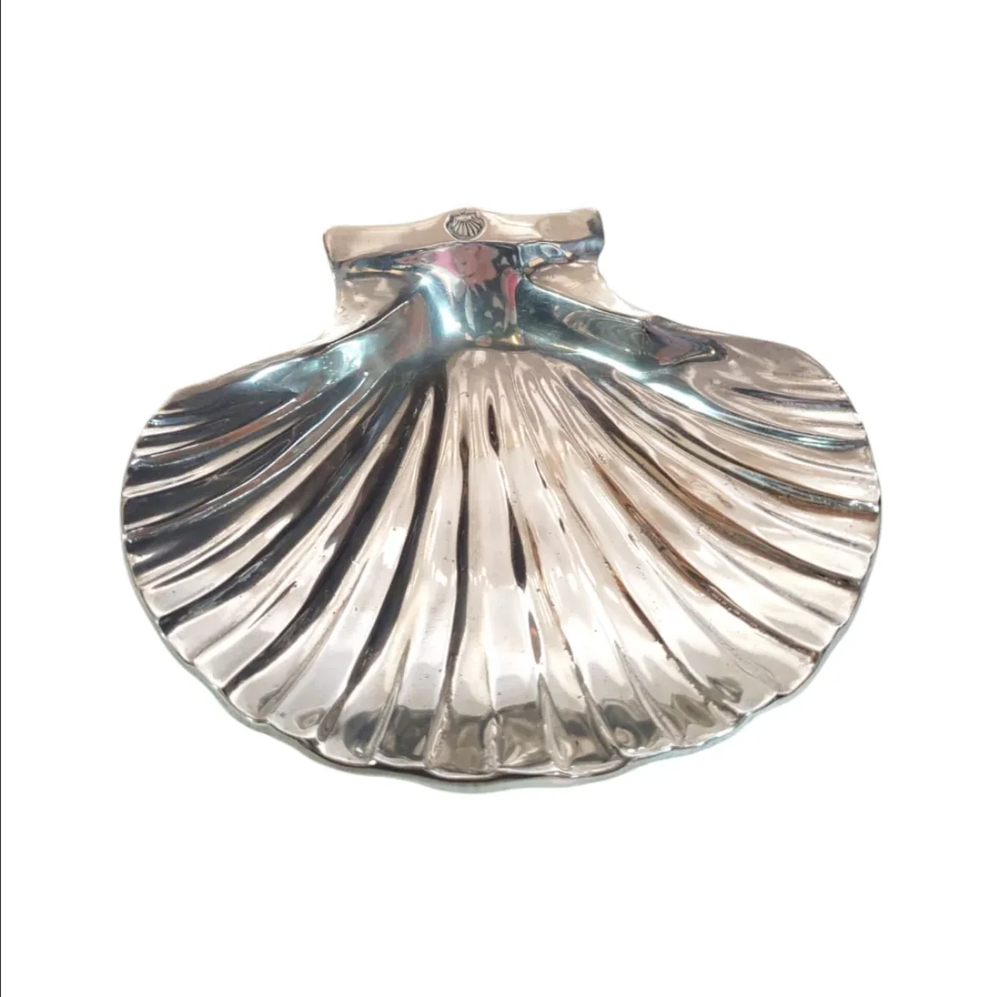
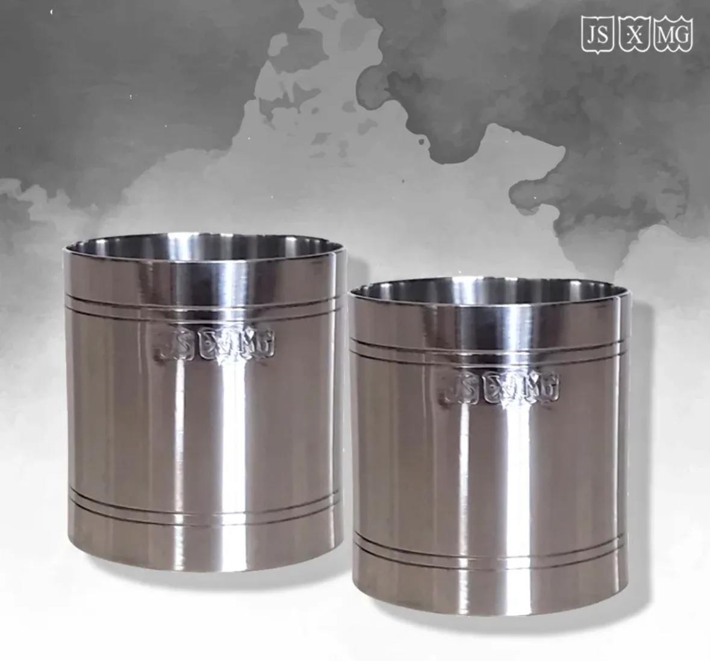
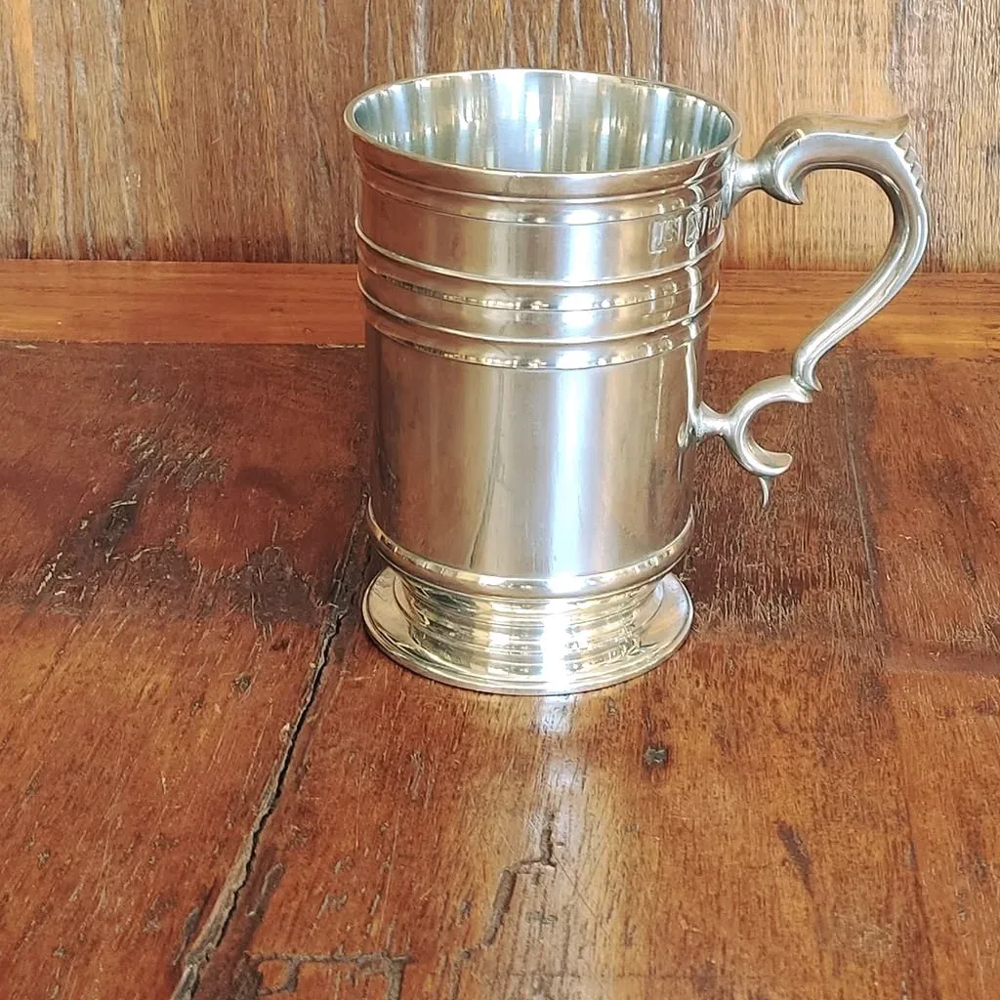
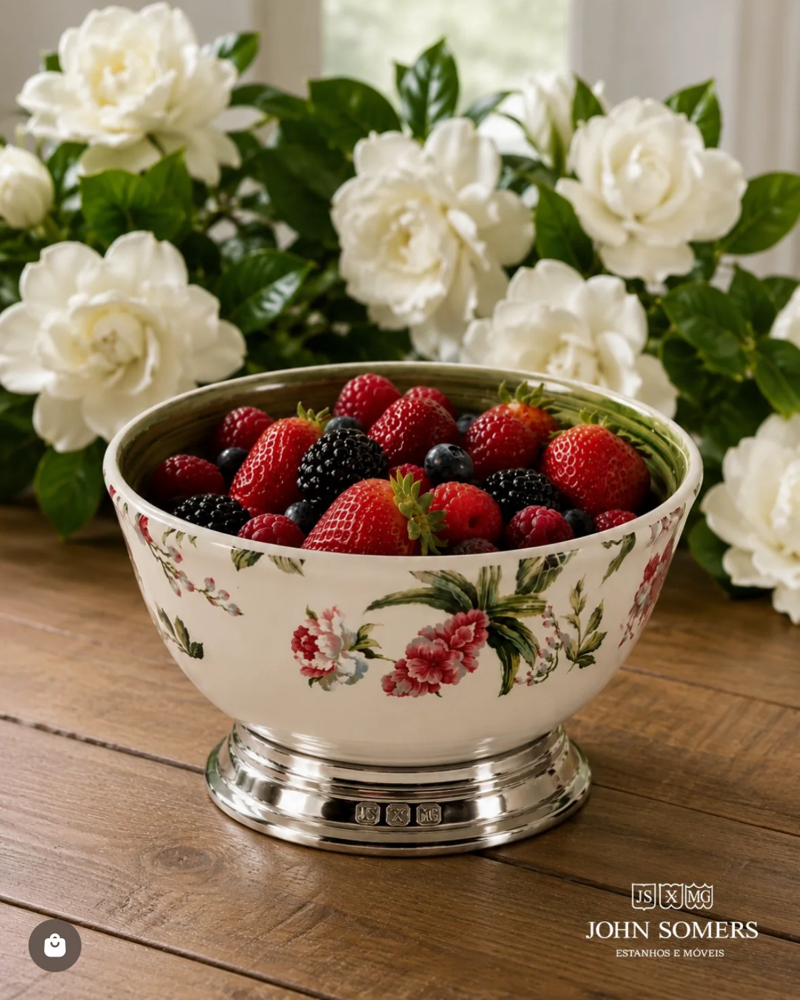
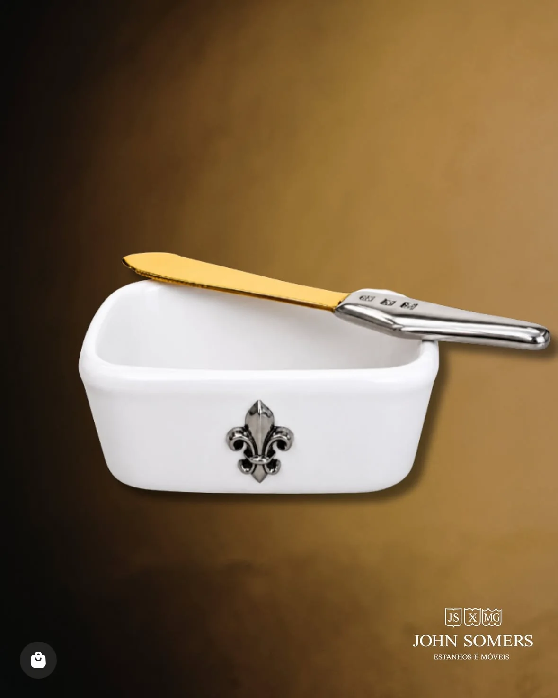
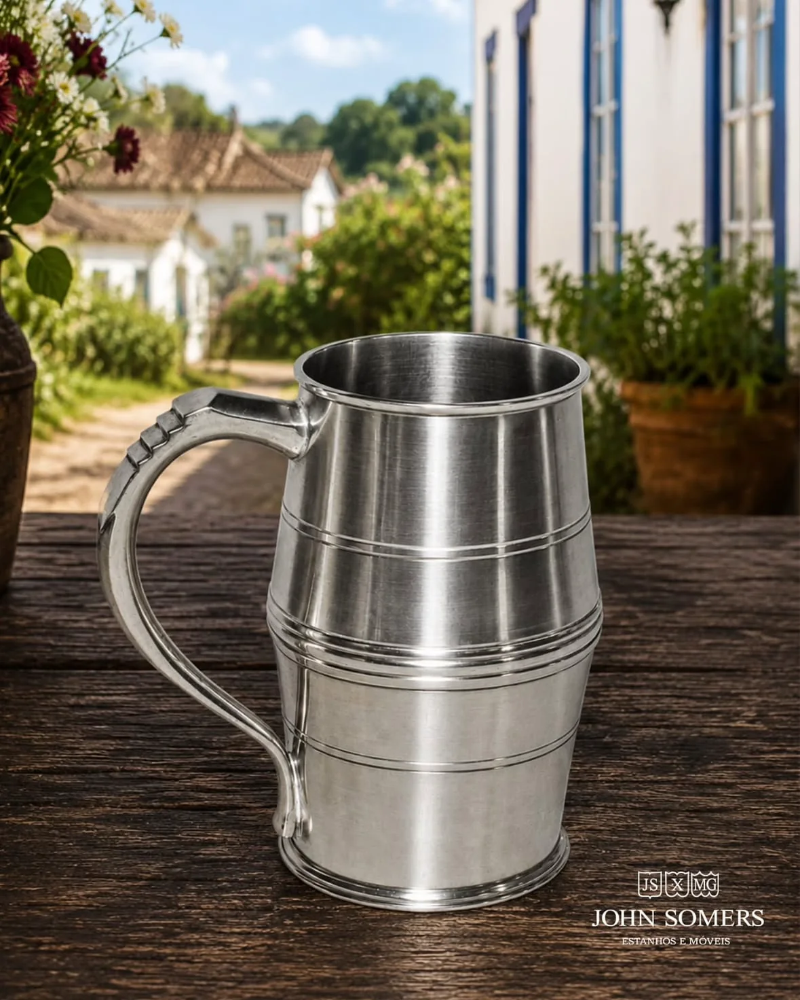
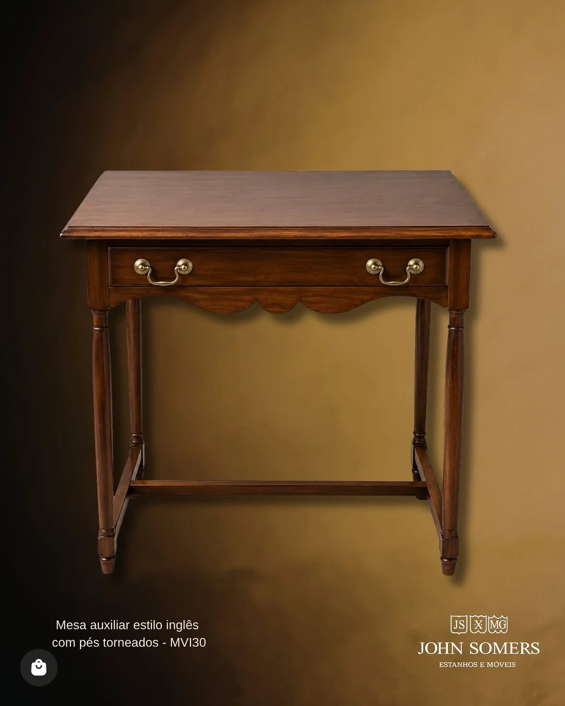

Do catálogo
Peças da casa.
Mesa, bar, liturgia e decoração. Todas à venda na loja online.









Peças fundidas e polidas uma a uma, inspiradas em modelos ingleses e portugueses. Mais de cinquenta anos de ofício.
Cada peça leva a punção da casa. Gire o cálice: é a mesma peça do catálogo, em três dimensões.
Mesa, bar, liturgia e decoração. Todas à venda na loja online.







Do copo de dose à caneca de cerveja com tampa. Venha ver de perto, ou escolha pela loja online.
Antiquário inglês radicado no Brasil, começou a reproduzir em estanho peças de tradição inglesa e portuguesa.
Pesquisou peças de naufrágios do século XVII e criou o Museu do Estanho John Somers.
São João del-Rei é Indicação de Procedência do estanho, reconhecida pelo INPI.